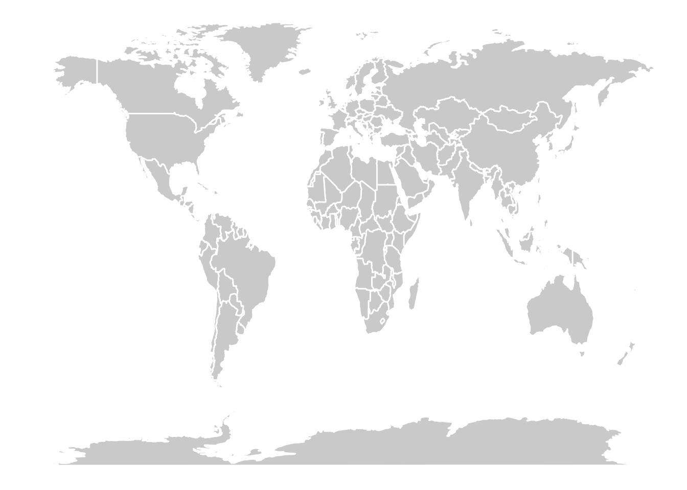
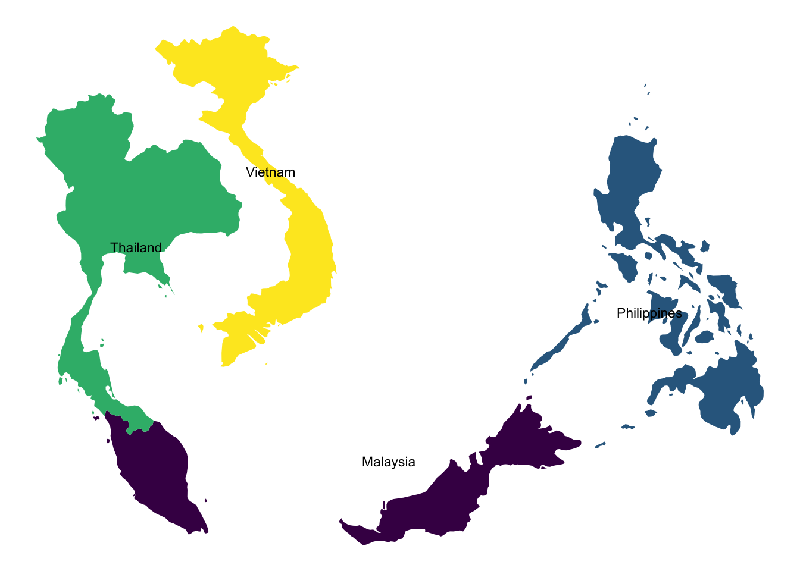
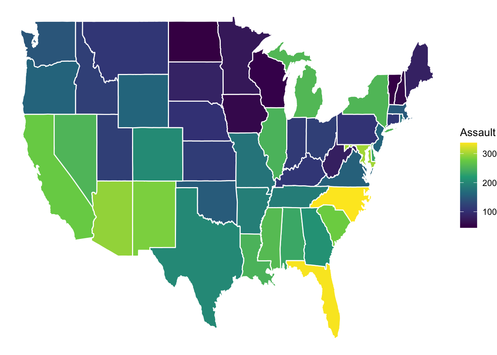
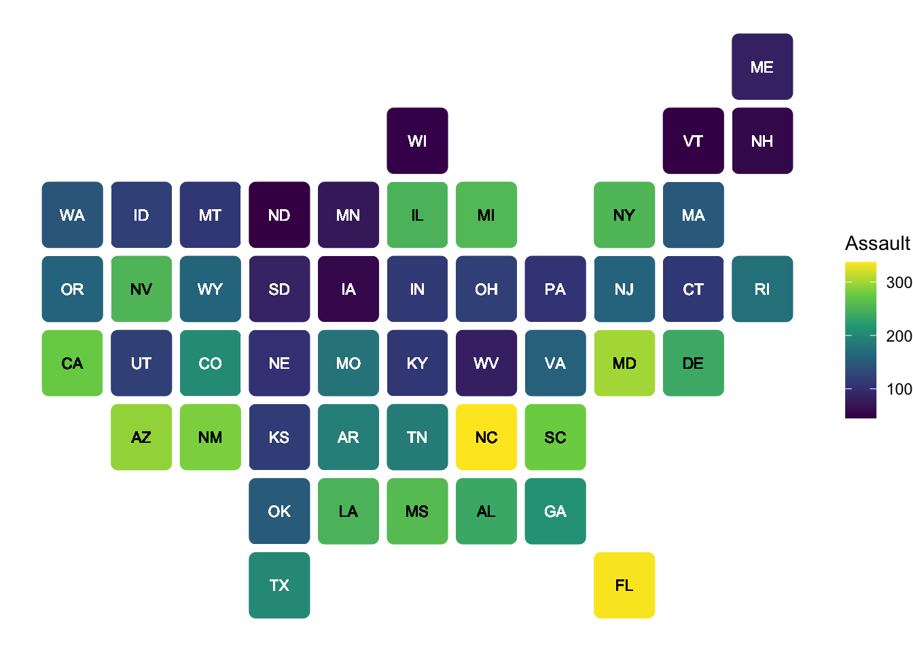

library(tidyverse)
library(sf)
library(maps)- 1
- Deal with spatial data
- 2
- Load the data pakage
In addition to the most common plots we’ve covered so far, many specialized plot types can be extremely useful depending on your research focus. While these plots may not be applicable to every project, they offer powerful ways to visualize complex data in specific fields.
Networks are increasingly common. For example, ecological networks. With the power of the tidygraph package to structure your data and ggraph to render it beautifully, you can create visualizations that are both informative and striking. For a look at what’s possible, check out these impressive examples here.
For researchers in evolutionary biology, phylogenetic trees are essential for illustrating evolutionary relationships. The ggtree package simplifies the process of creating detailed and informative trees. To see examples and learn more about its capabilities, visit here.
Spatial data visualization allows you to create maps and geospatial plots, providing visually compelling representations of data tied to geographic locations. This tutorial introduces the basics of creating maps using ggplot2 and the sf package. While spatial data analysis is a vast topic, hopefully this guide provides a foundation for getting started.
We’ll use a new package sf, a modern package for handling spatial data in R. It represents geographic features (like points, lines, and polygons) in a way that ggplot2 understands.
library(tidyverse)
library(sf)
library(maps)Let’s start by creating a simple world map.
world_map <- map_data("world")
ggplot(world_map, aes(x = long, y = lat, group = group)) +
geom_polygon(fill = "lightgray", colour = "white") +
theme_void()
We can easily create maps of specific regions by filtering the world map data.
# Retrieve the map data for some asian countries
some_asia_maps <- map_data("world", region = c(
"Malaysia",
"Philippines",
"Thailand",
"Vietnam"
))
# Calculate the center of each country for labels
asia_lab_data <- some_asia_maps %>%
group_by(region) %>%
summarise(long = mean(long), lat = mean(lat))
# Plot the map
ggplot(some_asia_maps, aes(x = long, y = lat)) +
geom_polygon(aes( group = group, fill = region))+
ggrepel::geom_text_repel(aes(label = region), data = asia_lab_data, size = 3)+
scale_fill_viridis_d()+
theme_void()+
theme(legend.position = "none")
Now, let’s combine a map with external data. We’ll use the USArrests dataset and visualize assault rates across US states.
arrests_map <- USArrests |>
as_tibble(rownames = "state") |>
mutate(region = tolower(state)) |>
right_join(map_data("state"), by = "region")
arrests_map |>
ggplot(aes(long, lat, group = group))+
geom_polygon(aes(fill = Assault), color = "white")+
scale_fill_viridis_c(option = "D")+
theme_void()
Importantly, it does not always not to be geogropahically accurate. We can use statebins package to make a useful visualization.
library(statebins)
arrests_map |>
drop_na(state) |>
ggplot(aes(state = state, fill = Assault))+
geom_statebins(color = "white")+
scale_fill_viridis_c(option = "D")+
theme_void()
If you want to learn more about mapping, here are some useful packages:
ggmap: For integrating with Google Maps and other map services. See the ggmap tutorial for details. This allows you to use map tiles from various providers as your base map.ggspatial: Provides tools for adding annotations like scale bars and north arrows to your maps.Additionally, you can learn a lot from well-documented examples. Check out the following website for some outstanding examples with codes here.